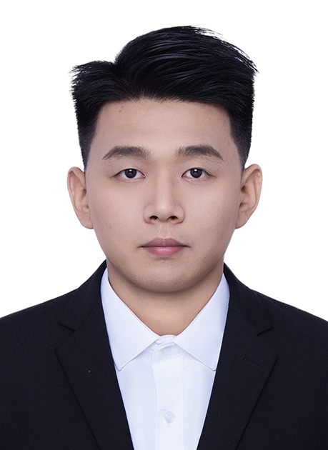

姓名：李思恩
性别：男
年龄：25岁
联系方式：15264770941 邮箱：lisienkyanbs@163.com
OCRID:https://orcid.org/0009-0009-2189-0827
研究方向: 计算机视觉，医学图像分析，深度学习

教育经历
- 2018年9月-2022年6月: 本科 计算机科学与技术 济宁学院，
- 2022年6月-至今: 硕士 计算机技术 曲阜师范大学，
------------------------------------------------------------------------------------------------------------------------------------------------------
科研经历
Deep--learning segmentation method for optical coherence tomography angiography in ophthalmology, Journal of Biophotonics， SCI 2区， 第二作者 https://doi.org/10.1002/jbio.202300321
- 我们构建一个新的Optic Disc and Macula in fundus Image with Optical Coherence Tomography Angiography (OCTA) dataset利用光学相干断层扫描血管造影（OCTA）数据集（ODMI）,
提出了一个新的框架，即基于粗注意力和精细注意力的网络（CFANet）。CFANet可以综合粗糙和精细的特征来分割视盘和黄斑。
设计了粗粒度特征提取模块（CGF），该模块可以提取视网膜图像中的粗特征。我们提出了一种细粒度特征提取模块（FGF），可以提取视网膜图像中的精细特征。
SFNet: Spatial and Frequency Domain Networks for Wide-Field OCT Angiography Retinal Vessel Segmentation, Journal of Biophotonics， SCI 2区， 第一作者 https://doi.org/10.1002/jbio.202400420
- 我们构建一个新的Retinal Vessels Images in OCTA (REVIO) dataset利用光学相干断层扫描血管造影（OCTA）数据集（REVIO）,
提出了一个新的框架，即基于空间域和频域的分割网络（SFNet）。SFNet可以综合空间域特征和频域特征来分割视网膜血管。
设计了基于空间域的定向关注模块，该模块可以提取视网膜图像中的空间特征。我们提出了一种基于频域的感知模块，可以提取视网膜血管中的精细特征。
SMFDNet: Spatial and Multi-Frequency Domain Network for OCT-Angiography Retinal Vessel Segmentation, Journal of Supercomputing， CCF-C， 第一作者 https://doi.org/10.1007/s11227-025-06985-6
-
我们提出了一个新的框架，即基于空间域和多频域的分割网络（SMFDNet）。SMFDNet可以利用空间域特征和多频域特征来分割视网膜血管。
设计了空间域模块，该模块可以提取视网膜图像中的空间特征。我们提出了一种多频域征提取模块，可以提取视网膜图像中的血管细节。
专利《一种新的眼科光学相干断层血管造影的视盘和黄斑分割方法》, 实质审查阶段， 第二作者
------------------------------------------------------------------------------------------------------------------------------------------------------
实习经历
- 2023年1月-2023年6月：山东米捷软件有限公司 ，研发工程师
- 2024年2月 – 2025年1月：中国科学院深圳先进技术研究院，客座学生
------------------------------------------------------------------------------------------------------------------------------------------------------
IT技能
- 技能： 熟悉Python及相关PyTorch等深度学习框架，熟悉Java语言
- 语言： 英语（CET-4），普通话（二级乙等）
------------------------------------------------------------------------------------------------------------------------------------------------------
获奖情况
- 2018-2019年度获国家励志奖学金，学业二等奖学金，校优秀学生
- 2019-2020年度获国家励志奖学金，学业二等奖学金，校优秀学生
- 2020-2021年度获国家励志奖学金，学业二等奖学金，校优秀学生
- 2021-2022年度获国家励志奖学金，学业一等奖学金，校优秀学生
- 2021-2022年度获山东省优秀毕业生
- 2022-2023年度获学业二等奖学金
- 2023-2024年度获学业二等奖学金
- 2024-2025年度获学业一等奖学金，校优秀研究生，校优秀毕业生
------------------------------------------------------------------------------------------------------------------------------------------------------
自我评价
逻辑清晰，责任心强、抗压强，有很强的学习、吸收新事物的能力。习惯制定计划，具有良好的团
队合作精神，善于沟通，可以引领团队完成任务，提出框架性规划，可以接受具有挑战性的工作，能群
策群力，团结同事，以求更好的完成工作，希望能在踏实地一步步中走向更好，充分发挥自己的作用，
达到上级期望。